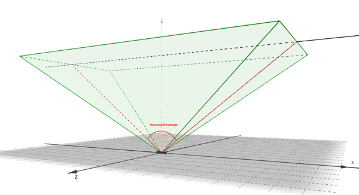
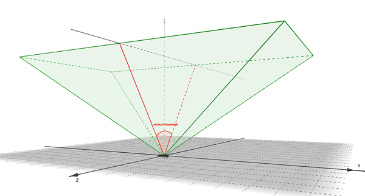

Device¶
Attributes:
Methods:
- class Leap.Device¶
The Device class represents a physically connected device.
The Device class contains information related to a particular connected device such as field of view, device id, and calibrated positions.
Note that Device objects can be invalid, which means that they do not contain valid device information and do not correspond to a physical device. Test for validity with the Device.is_valid property.
New in version 1.0.
- classmethod Device()¶
Constructs a Device object.
An uninitialized device is considered invalid. Get valid Device objects from a DeviceList object obtained using the Controller.devices property.
device = controller.devices[0]
New in version 1.0.
- baseline¶
Type: float The distance between the center points of the stereo sensors, in millimeters.
The baseline value, together with the maximum resolution, influence the maximum range.
New in version 2.2.5.
- horizontal_view_angle¶
Type: float The angle of view along the x axis of this device.
The Leap Motion controller scans a region in the shape of an inverted pyramid centered at the device’s center and extending upwards. The horizontal_view_angle reports the view angle along the long dimension of the device.
angle_along_x = device.horizontal_view_angle
New in version 1.0.
- vertical_view_angle¶
Type: float The angle of view along the z axis of this device.
The Leap Motion controller scans a region in the shape of an inverted pyramid centered at the device’s center and extending upwards. The vertical_view_angle reports the view angle along the short dimension of the device.
angle_along_z = device.vertical_view_angle
New in version 1.0.
- range¶
Type: float The maximum reliable tracking range.
The range reports the maximum recommended distance from the device center for which tracking is expected to be reliable. This distance is not a hard limit. Tracking may be still be functional above this distance or begin to degrade slightly before this distance depending on calibration and extreme environmental conditions. The range is not computed dynamically; it is based on the hardware model.
max_range = device.range
New in version 1.0.
- serial_number¶
Type: string An alphanumeric serial number unique to each device.
Current consumer device serial numbers consist of 2 letters followed by 11 digits. OEM, developer, and future devices may use a different format.
When using multiple devices, the serial number provides an unambiguous identifier for each device.
New in version 2.2.2.
- is_embedded¶
Type: boolean Reports whether this device is embedded in another computer or computer peripheral. True, if this device is embedded in a laptop, keyboard, or other computer component; false, if this device is a standalone controller.
New in version 1.2.
- is_lighting_bad¶
Type: boolean The software has detected excessive IR illumination, which may interfere with tracking. If robust mode is enabled, the system will enter robust mode when is_lighting_bad is true.
New in version 2.3.2.
- is_smudged¶
Type: boolean The software has detected a possible smudge on the translucent cover over the Leap Motion cameras.
New in version 2.3.2.
- is_streaming¶
type: boolean Reports whether this device is streaming data to your application.
Currently only one controller can provide data at a time.
New in version 1.2.
- is_valid¶
Type: boolean Reports whether this is a valid Device object.
New in version 1.0.
- distance_to_boundary(position)¶
The distance to the nearest edge of the Leap Motion controller’s view volume.
The view volume is an axis-aligned, inverted pyramid centered on the device origin and extending upward to the range limit. The walls of the pyramid are described by the horizontal_view_angle and vertical_view_angle and the roof by the range. This function estimates the distance between the specified input position and the nearest wall or roof of the view volume.
front_finger = frame.fingers.frontmost if front_finger.is_valid: fov_edge_distance = device.distance_to_boundary(front_finger.tip_position)
Parameters: position (Vector) – The point to use for the distance calculation. Returns: float – The distance in millimeters from the input position to the nearest boundary. New in version 1.0.
- eq(a, b)¶
Compare Device object equality.
Two Device objects are equal if and only if both Device objects represent the exact same Device and both Devices are valid.
New in version 1.0.
- ne(a, b)¶
Compare Device object inequality.
Two Device objects are equal if and only if both Device objects represent the exact same Device and both Devices are valid.
New in version 1.0.
- invalid¶
An invalid Device object.
New in version 1.0.